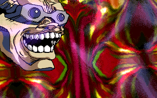

Most of the files which are available for download in this section are
executable programs for DOS. These demonstrations should work on any 486
or pentium with VGA and a Super VGA monitor or better. Some weird video
modes might not work on your configuration. Also, to get any kind of
sound you will need a Gravis Ultrasound.
1999.12.14 - N.Y.C.D.

NEW: Warp has done a quick Linux (unix?) port of nycd. You'll also
need GGI and
libmikmod for visuals
and sound. (the bugfixed dos version has been cancelled :).
"Nothing You Can Do" was our demo compo entry at X'97 Takeover, due to
a bug in the compiler we used it crashed on almost every machine except
our own. Thus when it was shown on the big screen it crashed half-way
through and came last in the compo.
"Warp20" is an intro of which every tiny little part was created by
Tharsis. Tharsis created this birthro in a few days after he found out
Warp just turned twenty.
"Enjoy These Moments" was to be a sound demo, but our coders were too
lazy to create any effects for the demo, so tharsis made a little
game instead. Hit <space> after starting the demo and get ready for
some addicting 2-player action!
"Smurfig" is our contribution to the Bizarre'95 intro compo, it makes
use of a very obscure 256x256x256 mode which didn't work on most PC's, and
definitly not on the compo projector. So the intro wasn't shown on the
big screen :-(.
"Pakjesavond" is a Sinterklaas intro, which is sort of like an x-mas intro,
but celebrating Sinterklaas' birthday instead of christmas. (Sinterklaas
is basically the traditional dutch equivalent of Santa Claus).